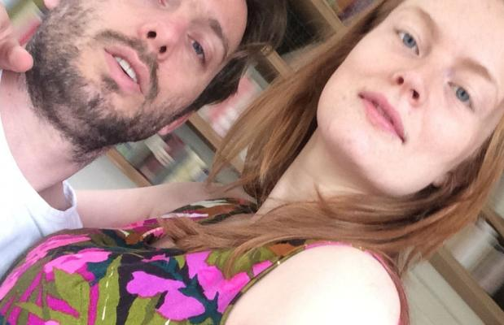

Enter the Writers
Seance App
By Dirk Vis
Are there any apps that allow you to summon up spirits as well as the right train times? I have looked at this question before. What I'm specifically looking for is whether there are app builders who developed using the interactions of the users themselves.
With that question in mind, I went to the App Store. The first app I downloaded was the one from Cinekid. This app acts as a filter. The editors of Cinekid have fished out some gems from the gigantic reservoir of questionable content in the App Store, despite Apple’s own strict requirements.
Using the Cinekid app, I also downloaded Bounden, which is a very cute initiative. This app turns your phone into a “tool for dancing” by way of customised navigation, choreography, music and - of course - your dancing partner. This dance initiative, using both a partner and an iPhone is in my opinion a true work of art. It shows how much we need technology to communicate, and it highlights the relationship we have with the thing. Because, as one of the dancing partners, you pay continual attention to this dancing tool; moreso than your actual partner.
There are thousands and thousands of apps available, but there are only a couple of makers that I have followed for years. Scott Snibbe is one of them. He made a series of visual apps, including the app LP by Björk. I downloaded his Motion Phone. This app allows you to create abstract animations. The real magic of this app happens when you contact, or place your device near someone else's iPhone. Then you see the drawings from one phone merge with those from the other. In my opinion, this is a beautiful depiction of the endless amount of invisible things that happen when two people meet. Chemistry, pheromones, energy, dark matter. Snibbe presented this particular work twenty years ago, as a work of art. Now it is an app that everyone can use.
Still, the question remains; what is all of this actually for? What can you do or develop now, that you couldn’t do before? Dancing and drawing; regardless of how beautiful these apps are, are things that I like to do and often do; with or without an app. What images, memories, or dreams can we capture with these apps that we couldn’t capture before? And what are the incentives for artists to make their tools? I'm going to ask a tool maker himself. The one who, as far as I am concerned, always managed to conjure up the most advanced tools for his artistic goals. I'm going to try to get in touch with Stanley Kubrick.
 Photo: Dirk Vis
Back